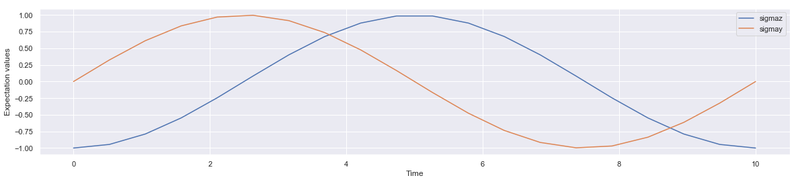
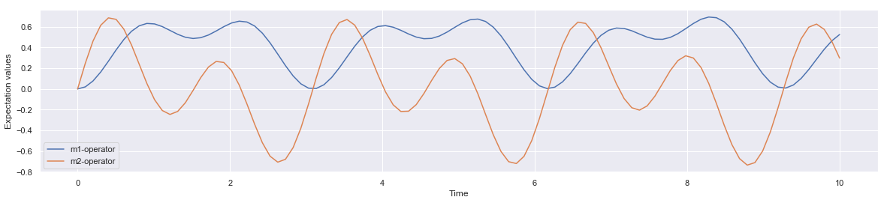

Algebra with Composite Hamiltonian
Algebra: Composite-Hamiltonian and Time Evolution
- https://numpy.org/doc/stable/reference/routines.linalg.html
- http://qutip.org/docs/latest/guide/dynamics/dynamics-master.html
import numpy as np
from qutip import *
import seaborn as sns
import matplotlib.pyplot as plt
%matplotlib inline
sns.set()
Given a Hamiltonian, we can calculate the unitary (non-dissipative) time-evolution of an arbitrary state vector |ψ0⟩ (psi0) using the QuTiP function qutip.sesolve. It evolves the state vector and evaluates the expectation values for a set of operators expt_ops at the points in time in the list times, using an ordinary differential equation solver.
Scrodinger Equation: $$i\hbar\frac{d}{dt}\left|\psi\right> = H \left|\psi\right>$$
Time evolution: 
A . Single qubit System
-
- Consider a single qubit hamiltonian constructed by implementing pauli x operator: $$H = 2 \pi \sigma_x$$
# single qubit hamiltonian
H = 2.0*np.pi * sigmax()
H
Quantum object: dims = [[2], [2]], shape = (2, 2), type = oper, isherm = True\begin{equation}\left(\begin{array}{{11}c}0.0 & 6.283\6.283 & 0.0\\end{array}\right)\end{equation*}
-
- Create the initial state of the system
#initial state of the single qubit system
#psi0 = basis(2,0)
psi0 = basis(2,1)
#psi0 = (1/np.sqrt(2))*basis(2,0)+ (1/np.sqrt(2))*basis(2,1)
psi0
Quantum object: dims = [[2], [1]], shape = (2, 1), type = ket\begin{equation}\left(\begin{array}{{11}c}0.0\1.0\\end{array}\right)\end{equation*}
-
- Create time array to conduct measurement time points during the evolution
times = np.linspace(0.0, 10.0, 20)
times
array([ 0. , 0.52631579, 1.05263158, 1.57894737, 2.10526316,
2.63157895, 3.15789474, 3.68421053, 4.21052632, 4.73684211,
5.26315789, 5.78947368, 6.31578947, 6.84210526, 7.36842105,
7.89473684, 8.42105263, 8.94736842, 9.47368421, 10. ])
-
- Simulate the time evolution by implementing
sesolvefunction by supplying hamiltonianH, initial statepsi0, time arraytimesand list of operators[sigmaz(), sigmay()]representing what you want to measure as expectation value of.
- Simulate the time evolution by implementing
result = sesolve(H, psi0, times, [sigmaz(), sigmay()])
-
- Explore the result
result
Result object with sesolve data.
--------------------------------
expect = True
num_expect = 2, num_collapse = 0
-
- Where are the expectation value of the implemented operator for measurement during time evolution?
result.expect
[array([-1. , -0.94581561, -0.78913418, -0.54693623, -0.24546751,
0.08260204, 0.40171988, 0.67730341, 0.87948895, 0.9863673 ,
0.98635446, 0.87945165, 0.67724451, 0.4016443 , 0.08252413,
-0.24554292, -0.54700067, -0.78917951, -0.94583863, -1. ]),
array([ 0.00000000e+00, 3.24704211e-01, 6.14220851e-01, 8.37174272e-01,
9.69404818e-01, 9.96582612e-01, 9.15762600e-01, 7.35703806e-01,
4.75919309e-01, 1.64558631e-01, -1.64635573e-01, -4.75988221e-01,
-7.35758027e-01, -9.15795752e-01, -9.96589067e-01, -9.69385719e-01,
-8.37132169e-01, -6.14162600e-01, -3.24637165e-01, 7.13395936e-05])]
- 7 Plot the time evolution of the expection values of the implemented operators
import matplotlib.pyplot as plt
plt.figure(figsize = [20,4])
plt.plot(result.times, result.expect[0])
plt.plot(result.times, result.expect[1])
plt.xlabel('Time')
plt.ylabel('Expectation values')
plt.legend(("sigmaz", "sigmay"))
plt.show()

Lets repeat the same steps for multi-qubit system. Before that, we need to construct the composite hamiltonian representing the quantum mechanical system.
B. Constructing composite Hamiltonians
1. Two coupled qubits
Consider a Hamiltonial of a 2 qubits system representated by composite hamiltonian shwn below. The first term represents the contribution of second qubit Z spin operator (sigmaz()) while first qubit remains inactive(identity); the second term represents the contribution of first qubit spin operator while second qubit remains inactive(identity); the third represents the contribution of first and second qubit X spin operator.
$H = 0.2(\sigma_z \otimes I) + 0.4(I \otimes \sigma_z) + \frac{1}{4} (\sigma_x \otimes \sigma_x)$
H2 = 0.2*np.pi*tensor(sigmaz(), identity(2)) \
+ 0.4*np.pi*tensor(identity(2),sigmaz()) \
+ 0.25 *np.pi*tensor(sigmax(), sigmax())
H2
Quantum object: dims = [[2, 2], [2, 2]], shape = (4, 4), type = oper, isherm = True\begin{equation}\left(\begin{array}{{11}c}1.885 & 0.0 & 0.0 & 0.785\0.0 & -0.628 & 0.785 & 0.0\0.0 & 0.785 & 0.628 & 0.0\0.785 & 0.0 & 0.0 & -1.885\\end{array}\right)\end{equation*}
2. Three Coupled Qubit
Consider a Hamiltonial of a 3 qubits system representated by composite hamiltonian shwn below. The first term represents the contribution of third qubit Z spin operator (sigmaz()) while rest of the qubits remains inactive(identity); the second term represents the contribution of second qubit spin operator while remaining qubits inactive and so on.
$H = (\sigma_z \otimes I \otimes I) + (I \otimes \sigma_z \otimes I) + (I \otimes I \otimes \sigma_z ) + 1/2 (\sigma_x \otimes \sigma_x \otimes I) + 1/4 ( I \otimes \sigma_x \otimes \sigma_x)$
H3 = (tensor(sigmaz(), identity(2), identity(2)) +
tensor(identity(2), sigmaz(), identity(2)) +
tensor(identity(2), identity(2), sigmaz()) +
0.5 * tensor(sigmax(), sigmax(), identity(2)) +
0.25 * tensor(identity(2), sigmax(), sigmax()))
H3
Quantum object: dims = [[2, 2, 2], [2, 2, 2]], shape = (8, 8), type = oper, isherm = True\begin{equation}\left(\begin{array}{{11}c}3.0 & 0.0 & 0.0 & 0.250 & 0.0 & 0.0 & 0.500 & 0.0\0.0 & 1.0 & 0.250 & 0.0 & 0.0 & 0.0 & 0.0 & 0.500\0.0 & 0.250 & 1.0 & 0.0 & 0.500 & 0.0 & 0.0 & 0.0\0.250 & 0.0 & 0.0 & -1.0 & 0.0 & 0.500 & 0.0 & 0.0\0.0 & 0.0 & 0.500 & 0.0 & 1.0 & 0.0 & 0.0 & 0.250\0.0 & 0.0 & 0.0 & 0.500 & 0.0 & -1.0 & 0.250 & 0.0\0.500 & 0.0 & 0.0 & 0.0 & 0.0 & 0.250 & -1.0 & 0.0\0.0 & 0.500 & 0.0 & 0.0 & 0.250 & 0.0 & 0.0 & -3.0\\end{array}\right)\end{equation*}
C. Time Evolution with composite Hamiltonian
How to generate a initial state vector?
This is 2 qubit quantum mechanical system, there are 4 basis states $|00 \rangle, |01 \rangle, |10 \rangle, |11 \rangle$ in 4 dimentional complex vector space. All operators in 2 qubit system should be 4 by 4 matrices while state vector need to be 4 element column ket(bra) vector.
psi0 = basis(4, 0)
psi0
Quantum object: dims = [[4], [1]], shape = (4, 1), type = ket\begin{equation}\left(\begin{array}{{11}c}1.0\0.0\0.0\0.0\\end{array}\right)\end{equation*}
Q: Could we start with random ket vector? - Answer: yes!
# Example 1
psi1 = basis(4, 1)
psi1
Quantum object: dims = [[4], [1]], shape = (4, 1), type = ket\begin{equation}\left(\begin{array}{{11}c}0.0\1.0\0.0\0.0\\end{array}\right)\end{equation*}
# Example 2
psi2 = (1/2)*basis(4, 0) + (1/2)*basis(4,1) + (1/2)*basis(4,2) + (1/2)*basis(4,3)
psi2
Quantum object: dims = [[4], [1]], shape = (4, 1), type = ket\begin{equation}\left(\begin{array}{{11}c}0.500\0.500\0.500\0.500\\end{array}\right)\end{equation*}
Lets perform the time evolution with two new operators for measurement (m1-operator, m2-operator defined below in code block) of size 4 by 4 (why? remember, measurement operator in 2 qubit system also need to be 4 by 4 matrices).
# time array
times = np.linspace(0.0, 10.0, 100)
# measurement operator
m1_operator = tensor(identity(2), sigmaz())
m2_operator = tensor(sigmax(), sigmay())
# time evolution of state psi2 with hamiltonian H2 to calculate expectation
# value of m-operator and m-2 operator at 100 different time points
result = sesolve(H2, psi2, times, [m1_operator,m2_operator])
# array holding multiple subarray of results
result
Result object with sesolve data.
--------------------------------
expect = True
num_expect = 2, num_collapse = 0
# expectation value of m1 and m2 operator at 20 different time point
result.expect
[array([0. , 0.01990965, 0.07693353, 0.16338415, 0.26780409,
0.37676296, 0.47694252, 0.55716702, 0.6100466 , 0.63296734,
0.62827241, 0.60261422, 0.56559699, 0.52794726, 0.49952837,
0.48753968, 0.49520857, 0.52119896, 0.55983745, 0.60211928,
0.63732295, 0.65495828, 0.64671514, 0.60807788, 0.5393257 ,
0.44574105, 0.33698063, 0.22570382, 0.12567867, 0.04967351,
0.00747984, 0.00439134, 0.04038908, 0.11016689, 0.20399138,
0.30925384, 0.41245688, 0.50130765, 0.56657378, 0.60339885,
0.61186652, 0.5967288 , 0.56635478, 0.53108657, 0.50128824,
0.48542398, 0.48849536, 0.51110591, 0.54931383, 0.59529942,
0.6387351 , 0.66862566, 0.6753056 , 0.65225216, 0.59740204,
0.51374158, 0.40906153, 0.29490684, 0.1848873 , 0.09262206,
0.0296538 , 0.00367407, 0.01735098, 0.06795116, 0.14781638,
0.24561427, 0.34815462, 0.44247004, 0.51781734, 0.56727093,
0.58864968, 0.5846312 , 0.56204482, 0.53047246, 0.50040267,
0.4812572 , 0.47963015, 0.49804245, 0.53442637, 0.58243045,
0.63249529, 0.67351942, 0.69483308, 0.68814418, 0.64912366,
0.57835608, 0.48148692, 0.36853161, 0.25245172, 0.1472267 ,
0.06573458, 0.01778779, 0.00864563, 0.0382465 , 0.10128381,
0.18811041, 0.28631891, 0.38273458, 0.46548989, 0.5258384 ]),
array([ 0. , 0.24807532, 0.46250991, 0.61497901, 0.68691127,
0.67231624, 0.57853938, 0.42482815, 0.23895805, 0.05249073,
-0.10453705, -0.20860165, -0.24652328, -0.21750119, -0.13301915,
-0.01464653, 0.10988487, 0.21165762, 0.26575066, 0.25574337,
0.17677289, 0.03661915, -0.14537537, -0.34137929, -0.51963064,
-0.64971981, -0.70771236, -0.6802516 , -0.56694875, -0.38065373,
-0.14555266, 0.10659923, 0.34148914, 0.5276749 , 0.64153252,
0.67090663, 0.61686403, 0.493268 , 0.324255 , 0.14004515,
-0.02820489, -0.15363968, -0.21815444, -0.21531163, -0.15124055,
-0.04337637, 0.08274019, 0.19805446, 0.27519744, 0.29340795,
0.24233764, 0.12408733, -0.0468794 , -0.24594165, -0.44228493,
-0.60396499, -0.7032264 , -0.72118534, -0.65108967, -0.49960562,
-0.28590896, -0.03872439, 0.20820059, 0.42144006, 0.57316865,
0.64550295, 0.63319037, 0.54420723, 0.39817726, 0.22288599,
0.04948365, -0.09281286, -0.18162714, -0.20511603, -0.1638308 ,
-0.0704398 , 0.05263326, 0.17724956, 0.27458447, 0.32028959,
0.29890787, 0.20678744, 0.05299223, -0.14195583, -0.34930263,
-0.53672363, -0.67364595, -0.7363421 , -0.71194204, -0.60068927,
-0.41605836, -0.18270779, 0.06739733, 0.30005268, 0.48423444,
0.5969749 , 0.62688952, 0.5757772 , 0.45803793, 0.29801709])]
import matplotlib.pyplot as plt
plt.figure(figsize = [20,4])
plt.plot(result.times, result.expect[0])
plt.plot(result.times, result.expect[1])
plt.xlabel('Time')
plt.ylabel('Expectation values')
plt.legend(("m1-operator", "m2-operator"))
plt.show()
